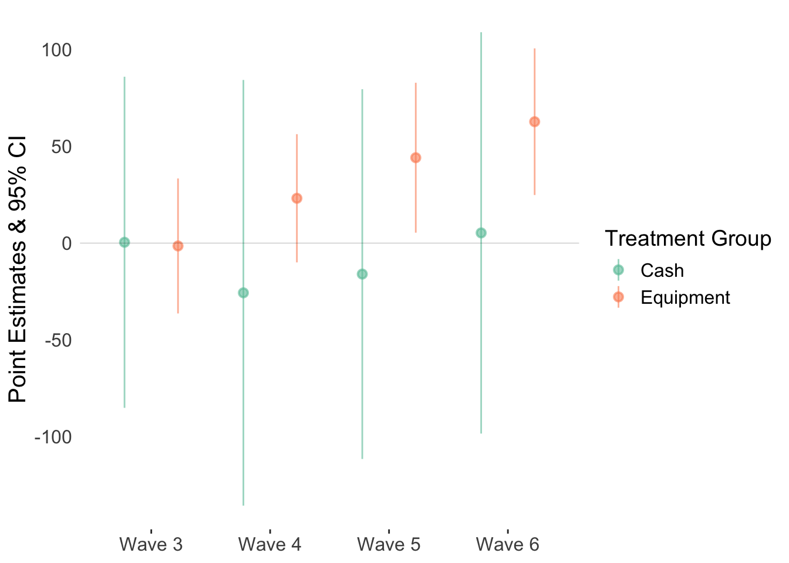

R code for data visualization in economics, created and maintained by DIME Analytics.
# Install and load packages ---------------
packages <- c(
"tidyverse",
"tidymodels",
"haven",
"forcats",
"caret",
"lfe"
)
# Change to install = TRUE to install the required packages
pacman::p_load(packages, character.only = TRUE, install = FALSE)
# Load an example dataset ---------------
# See https://microdata.worldbank.org/index.php/catalog/2249
# Only relevant variables are kept in the dataset
data <- read_dta("https://github.com/worldbank/r-econ-visual-library/raw/master/Library/Data/ReplicationDataGhanaJDE_short.dta")
# Treatment group includes only those who received treatment
# between 2nd and 3rd waves, for simplicity
analysis_data <- data %>%
filter(wave >= 2) %>%
group_by(sheno) %>%
mutate(
treatment = max((wave == 3) & (timetreat == 1)),
control = all(control == 1),
wave = relevel(as.factor(wave), ref = "2")
) %>%
filter(treatment == TRUE | control == TRUE) %>%
ungroup()
res <- felm(
realfinalprofit ~ (cashtreat + equiptreat) * wave | wave + sheno | 0 | sheno,
data = analysis_data
)
var_list <- rownames(summary(res)$coef)
cash_var_list <- var_list[grepl("cashtreat:wave?", var_list)]
equip_var_list <- var_list[grepl("equiptreat:wave?", var_list)]
fig_data <- tibble(
group = c(rep("Cash", length(cash_var_list)), rep("Equipment", length(equip_var_list))),
wave = rep(paste0("Wave ", c("3", "4", "5", "6")), 2),
coef = summary(res)$coef[c(cash_var_list, equip_var_list), "Estimate"],
se = summary(res)$coef[c(cash_var_list, equip_var_list), "Cluster s.e."]
)
ggplot(fig_data, aes(x = wave, y = coef, colour = group)) +
geom_pointrange(
aes(ymin = coef - 1.96 * se, ymax = coef + 1.96 * se),
position = position_dodge(width = 0.9),
alpha = 0.6, size = 0.5
) +
geom_hline(yintercept = 0, size = 0.1, alpha = 0.5) +
theme_classic() +
ylab("Point Estimates & 95% CI") +
scale_color_brewer(palette = "Set2", name = "Treatment Group") +
theme(
axis.line = element_blank(),
axis.text = element_text(size = 12),
axis.title.y = element_text(size = 15),
axis.title.x = element_blank(),
axis.ticks.y = element_blank(),
legend.text = element_text(size = 12),
legend.title = element_text(size = 14)
)